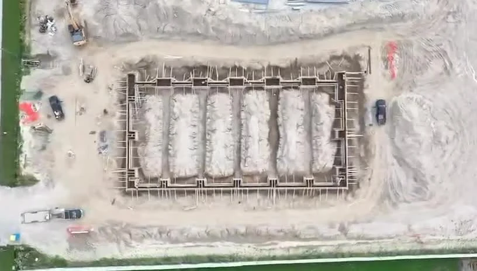

Site updates 3 min read
Why every job site needs an office trailer
We just added an office trailer to our precast plant site in Shelburne. It's already changed how we meet and how much gets done on site.

My family's business is building a new precast plant in Shelburne, Ontario, and Mattbuilds is where I'm sharing the journey. This first site update is about something that doesn't look exciting in a photo: the office trailer.
We recently brought one onto the site, and it has helped a lot, mostly in two ways. It gives us a place to meet on site, and it gives us a place to actually get work done.
Before this trailer our meetings on site consisted of pacing back and forth from the car to the site, or leaving the site altogether to meet at the local Tim Hortons. Especially during the colder months these meetings were near impossible. Construction requires immense coordination between the builder and the sub-contractors and a trailer makes this coordination much easier.
On top of that, Shelburne is, let's say, windier than most places. According to WeatherSpark's year-round climate data, the windier part of the year runs from late October to late April, with average wind speeds above 17 km/h. On an open site like ours, that means nothing to block that wind. Let's just say we've had a few meetings where keeping the drawings from flying away was a bigger challenge than actually reading them. At times, it felt like the wind was trying to send our construction plans to another project entirely.
Four walls and a roof were long overdue and that's where this office trailer comes into play. In this week's blog I go over the key benefits of an office trailer and how it will help us complete the development in Shelburne.
Meetings happen next to the work
One of the biggest advantages of having an office on site is how easy it is to bring a discussion directly to the work.
Whether we're reviewing a drawing or discussing a particular area of the building, we can sit down, look at the plans and walk outside to see exactly what we're talking about. There's no need to drive somewhere else or rely on pictures to explain what's happening.
As Mobile Modular explains in its guide to job site trailers, site offices provide a central place for progress meetings and project coordination.
It also makes it easier to get the right people involved. Instead of asking everyone to drive somewhere for a meeting, someone can step into the trailer for 15 or 20 minutes, go over an issue and get right back to work.
On a construction project, that convenience adds up quickly.
Drawings and paperwork have a home
A construction site runs on paper almost as much as concrete and steel. From design drawings to inspection records and safety documents, these need to be readily accessible at all times. Some documents are also required to be kept on site. For example, under Ontario's construction regulation, design drawings must be on site while formwork is in use, according to the Infrastructure Health & Safety Association. A trailer keeps those drawings dry, organised and easy to find.
This is particularly relevant to us now because, as we enter the winter season, having a dry, organised space to keep the drawings means everyone can access the latest set when they need it.
It also helps avoid one of the easiest mistakes on a construction site: someone working off an outdated drawing because the current one was buried somewhere in the truck.

Work keeps moving between site walks
Being on site doesn't mean the administrative side of a project disappears.
Emails still need answering, schedules need updating, quotes need reviewing and decisions need to be made. Having a desk, power and a reliable place to work means we can take care of those things without constantly driving back and forth to the main office.
Sometimes, a question that takes ten minutes to resolve while everyone is on site can turn into a full day of emails and phone calls if nobody is available to deal with it.
Having a place to sit down and get those things done keeps the project moving.
A little comfort goes a long way
Construction isn't always comfortable, especially in an Ontario winter.
Shelburne's cold season runs through much of December to March, and snow is possible for a large part of the year. Having a climate-controlled space gives everyone somewhere to take a break before heading back outside.
If you're setting up a site
- Bring the trailer in early, before the busiest phase starts.
- Place it close to the work, but out of the way of trucks and equipment.
- Treat it as the front door of the project: drawings, schedules and meetings all start there.
Your ideas matter more than you think
The office trailer wasn't some big new idea. It was a simple solution to a problem we were already dealing with every day. Sometimes, that's all it takes.
Being part of the younger generation in a family business, I've learned that speaking up isn't always easy. The people who built the business have years of experience, and it's easy to assume they already know the best way to do things. But sometimes, looking at things from a different perspective is exactly what a business needs.
You don't have to come up with the next big thing. Sometimes, it's as simple as noticing a problem, suggesting a solution and being willing to help make it happen.
I'll keep posting progress from the Shelburne site as the plant takes shape. You can read more about me and why I started Mattbuilds.